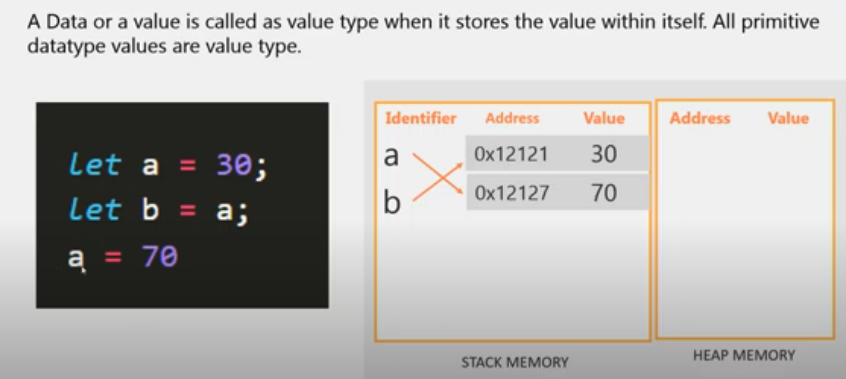
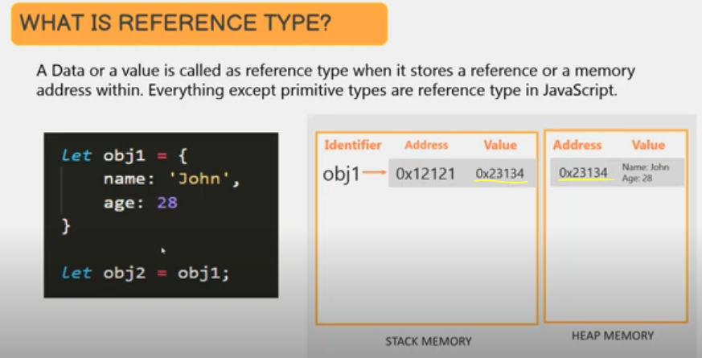

What is pass by value and pass by reference?
-
Pass By Value & Pass by Reference Arguments
-
primitive types are value types - stores the value within itself
a value type is stored in the stack memory

the first initialization of a is at memory address [0x12121], storing the value [30]
the second assignment of value is to address [0x12127], storing the value [70]
-
object types are reference types - stores a reference or a memory address within
a reference type is stored in the heap memory
the stack memory stores a reference to the object stored in the heap memory

the 'obj1' is not storing the value, but a reference to the address storing the value